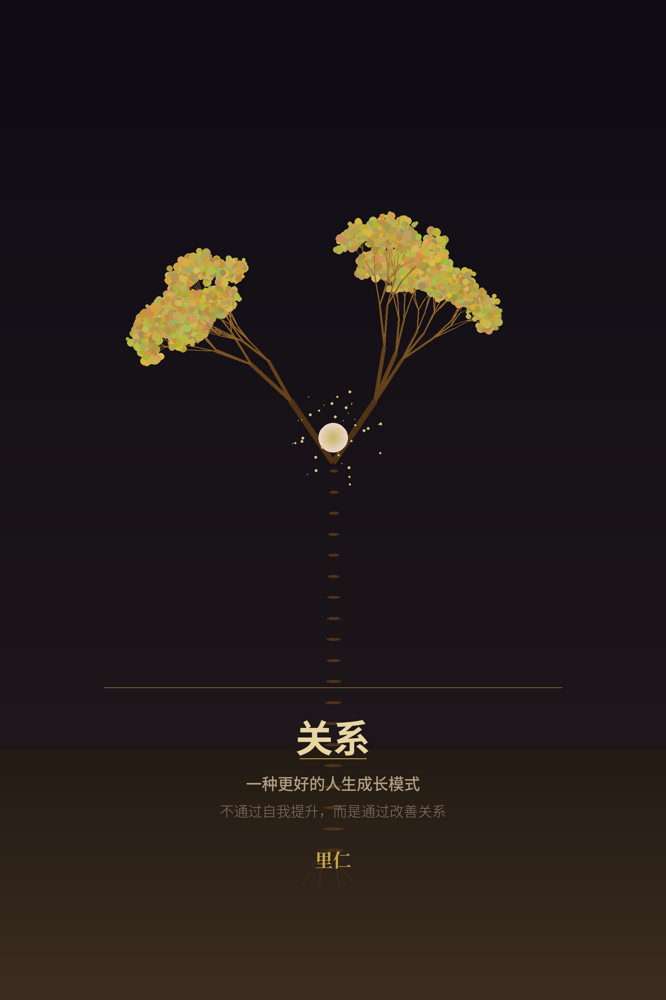
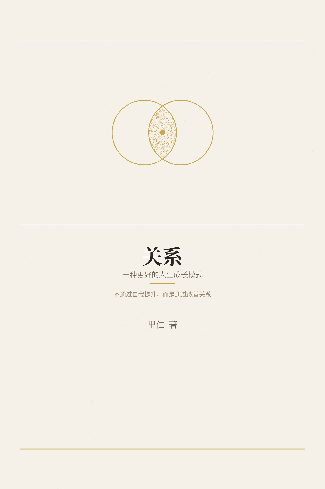

一种更好的人生成长模式
不通过自我提升，而是通过改善关系


一九四四年，法国。让-保罗·萨特写了一部戏剧，叫《禁闭》（Huis Clos）。
故事很简单：三个人死后被关在一个房间里。没有刑具，没有狱卒，没有火焰。房间甚至不算小，沙发、台灯、雕塑，该有的都有。唯一的惩罚是——他们彼此相处。
一开始，三个人还试图维持体面。但很快，谎言、猜忌、控制、讨好、背叛，一样一样地冒出来。他们互相折磨，互相依赖，互相定义，互相摧毁。想逃，逃不掉。想独处，做不到。想不在乎对方怎么看自己，不可能。
最后，其中一个角色说出了那句话：
"L'enfer, c'est les autres."
他人即地狱。
这句话从此成为西方思想史上最著名的一句话。人们引用它、讨论它、反驳它、用它来解释一切让人窒息的人际关系。它像一把刀，切开了人际关系表面的温情，露出了下面那层让人不安的东西——在他人面前，你永远不是自由的。
萨特到底在说什么？
很多人把这句话理解为"别人都不是好东西"或者"人际关系本质上是痛苦的"。这是误读。萨特自己后来澄清过：他不是说人际关系一定是地狱，而是说如果你和他人的关系被扭曲了，他人就变成了地狱。
但这个澄清太简短了，不够用。萨特真正想说的，比这更深。
他想说的是：人无法逃脱他人的目光。
你穿什么衣服，你在乎别人怎么看。你说什么话，你在乎别人怎么理解。你做什么选择，你在乎别人怎么评价。甚至你一个人待着的时候，你脑子里也在模拟别人会怎么看你。
这就是萨特说的"他人的目光"——它不是一个物理的东西，而是一种无处不在的结构。你被他人的目光所定义。你对自己的认知，有一半来自他人怎么看你。
在《禁闭》的房间里，三个人之所以互相折磨，不是因为他们恨彼此，而是因为他们无法不在乎彼此怎么看自己。一个人说谎，是为了在另一个人眼中维持某个形象。一个人讨好，是为了获得另一个人的认可。一个人攻击，是为了在另一个人面前显得强大。
每一种行为，都是为了在"他人的目光"中获得一个位置。
而地狱在于：你永远无法控制他人的目光。你以为你在展示自己，他在评判你。你以为你在表达善意，他在解读你的意图。你以为你在说真话，他在怀疑你的动机。
你和他人之间，永远隔着一层无法穿透的玻璃。
萨特的洞见是真实的。很多人一辈子活在别人的目光里——
活在父母的期待里："你应该考公务员，你应该结婚，你应该稳定。"
活在同事的评价里："他怎么还不升职？他是不是不行？"
活在社会的标准里："你这个年纪了还没有房？你这个学历了还做这个？"
活在朋友的比较里："你看人家谁谁谁，人家都怎样怎样了。"
这些目光像一张网，把人裹在里面。你想挣脱，但网的材质是关系——你不可能不和任何人发生关系就活着。只要有关系，就有目光。只要有目光，就有评判。只要有评判，就有地狱。
从这个意义上说，萨特是对的。某些关系确实像地狱。
但萨特错在哪里？
他错在一个关键的地方：他把关系的最坏状态当成了关系的本质。
打一个比方。有人说"水是危险的"。这话有没有道理？有。每年淹死很多人。但如果你因此得出结论说"水的本质是危险"，那就是错的。水的本质不是危险，水在某些条件下会变得危险——比如你不会游泳，比如水流太急，比如你在不该下水的地方下了水。
萨特做了一件类似的事。他看到了关系在扭曲状态下会变成地狱，然后把这个最坏状态推广为关系的本质。
在《禁闭》的房间里，三个人的关系确实是地狱。但那个房间是一个极端设定——他们不能离开，不能选择，不能改变关系的条件。在真实世界里，你有选择的权利。你可以选择和谁交往，可以选择在关系中扮演什么角色，可以选择对某些目光视而不见。
更重要的是，萨特忽略了一种关系的可能——不需要防御的关系。
什么叫"不需要防御"？
不是说没有冲突。朋友之间也会吵架，夫妻之间也会有分歧，亲子之间也会有矛盾。冲突是关系的一部分，不可避免。
不需要防御的意思是：在那段关系里，你不需要伪装自己。
你可以说真话，不用担心被利用。你可以暴露弱点，不用担心被攻击。你可以承认错误，不用担心被打压。你可以做真实的自己，不用担心被评判。
这种关系是否存在？
存在。但稀少。
你和一棵树之间就是这种关系。树不会评判你，不会利用你，不会假装。你在树面前不需要防御。
你和某些人之间偶尔也能达到这种关系。不是因为你遇到了"好人"，而是因为你们之间建立了一种特殊的结构——双方都以真实为基础，双方都允许对方不完美，双方都不把价值确认权交给对方。
这种关系不是天然存在的。它需要条件。它需要双方都有某种内在的能力——不被他人的目光所定义的能力。
而大多数人没有这个能力。所以大多数人活在萨特描述的那种关系里——他人即地狱。
但"大多数人活在地狱里"不等于"关系的本质是地狱"。
这是萨特的盲区，也是这本书要挑战的观点。
当今社会有一种主流的成长模式：先提升自己，再改善关系。读心理学的书，学情绪管理，练冥想，做自我觉察——等你"足够强大"了，关系自然就好了。
这个模式有一个根本性的错误：它把关系当成了成长的结果，而不是成长的手段。
好像你必须先变成一个更好的人，才配拥有好的关系。好像关系是一场考试，你必须先通过自己的修炼，才能及格。
但事实恰恰相反。成长不是发生在独处中的，成长发生在关系里。 你不是先变强再进入关系，而是在关系中变强。你不是先看清自己再理解别人，而是在理解别人的过程中看清自己。
这本书要论证一个命题：
有一种更好的人生成长模式——不通过自我提升，而是致力于改善关系。关系不是你成长的终点，关系是你成长的方式。
这不是鸡汤。这不是"只要心态好一切都好"。这是一种结构性的认识论主张——它建立在一套关于世界如何构成、人如何体验世界的框架之上。
这套框架有两个支柱：
第一个支柱：世界由四种基本存在构成——物质、能量、信息、关系。 关系不是两个实体之间的附属品，关系本身就是一种基本存在，和物质一样真实。
第二个支柱：人面对的世界不是一个是四个——客观世界、精神世界、梦世界、超越世界。 你在不同的世界里体验不同的关系，而超越世界意味着：你可以站在更高的位置重新看关系，看到的东西会不同。
有了这两个支柱，我们就能回答萨特回答不了的问题：
为什么某些关系是地狱？——因为在那些关系里，"真"被破坏了，防御被激活了。
为什么有些人不需要防御？——因为他们有能力不被他人的目光所定义。
为什么有些关系能超越地狱？——因为双方都在超越世界里重新审视了关系的本质。
怎么从地狱中走出来？——有四条路。每一条都指向同一个方向：把价值的确认权从外部收回到自己手中。
这本书从萨特的那句话开始。但不会停在那里。
我们会建立一张地图，帮你理解关系的全部结构。我们会深入"我"的内部，看看什么在驱动你。我们会走向"你"，看看关系如何成为成长的通道。我们会讨论超越——不是一个人的超越，而是在关系中发生的超越。
最终，我们会回到一个简单的结论：
他人不必是地狱。关系可以是更好的人生成长模式——前提是你愿意在关系中冒险，而不是躲在自我提升的安全区里。
这本书就是那张地图。
（第一章完）
先说一个场景。
你走进一片树林。阳光从树叶的缝隙里漏下来，风从远处吹来，带着泥土和草的味道。你深吸一口气，肩膀放松了，脑子里那些乱七八糟的念头暂时安静了。
你摸了摸一棵树的树皮，粗糙的，但让你安心。你蹲下来看一朵野花，很小，但开得很认真。你没有想过这棵树是不是"好人"，这朵花是不是"值得交往"。你只是在那里，它也只是在那里。你们之间没有任何需要防御的东西。
现在换一个场景。
你走进一个饭局。桌上坐着七八个人，有些认识，有些不认识。寒暄开始了——"最近忙什么呀？""你气色真好！""改天一起吃饭啊。"你笑着回应，但你的大脑同时在高速运转：这句话是真心的还是客套？他为什么突然提起那个人？他是不是在试探我？我刚才那句话说得合适吗？
你的肩膀紧了。你的笑容是挂在脸上的，不是从心里长出来的。你在防御。
饭局结束，你回到家，觉得累。不是身体累，是心累。你花了一整个晚上的精力去分辨、去判断、去表演、去保护自己。
这两种场景的差别，不是"内向"和"外向"的差别。不是"社恐"和"社牛"的差别。甚至不是"好人"和"坏人"的差别。
这两种场景的差别，是关系状态的差别。
在树林里，你不需要防御。在饭局上，你被迫防御。
很多人有过类似的体验。和某些人在一起，轻松、自在、不用想太多。和另一些人在一起，紧绷、疲惫、每说一句话都要斟酌。
但大多数人不会去追问为什么。他们只是把人分成"相处舒服的"和"相处不舒服的"，然后选择和前者多待，和后者少待。
这不是一个坏策略。但它掩盖了一个更深层的问题："舒服"和"不舒服"的本质区别是什么？
有人会说：舒服的人是好人，不舒服的人是坏人。
但这个解释太粗糙了。你遇到过让你不舒服的"好人"——他们没有恶意，甚至在帮你，但你就是觉得累。你也遇到过让你舒服的"坏人"——他们的某些行为你并不认同，但和他们在一起你就是不累。
所以"好人"和"坏人"不是关键。
有人会说：舒服的人和我性格合，不舒服的人和我性格不合。
这个解释好一点，但还是不够。"性格合"是什么意思？是兴趣相同？价值观一致？说话方式接近？这些都是表面的东西。更深的东西是——你在这段关系里需不需要防御。
什么叫防御？
防御不是一个单一的行为，它至少包含三个层面：
第一层：分辨。 他在说真话还是假话？他的表情和他的内心一致吗？他的承诺会不会兑现？你必须不断地判断、分析、推测。
第二层：保护。 你不敢暴露自己的弱点，因为你不知道对方会不会利用它。你不敢说真话，因为你不确定对方会怎么反应。你必须管理自己的形象，控制自己暴露多少。
第三层：伪装。 你不得不表现得比实际更开心、更有信心、更不在乎。你不得不说一些你不想说的话，做一些你不想做的事，维持一个不是你的人设。
这三层防御加在一起，就是"心累"的来源。
不是饭局本身让你累，是防御让你累。不是那个人本身让你累，是你在他面前不得不防御让你累。
现在回到树林。
为什么在树林里不需要防御？
答案很简单：树不会骗你。
一棵树就是一棵树。它不会假装自己不是树。它的叶子是绿的就是绿的，黄了就是黄了。它不会在你面前展示一个形象，背后藏着另一个意图。它不会今天对你好，明天突然翻脸。它不会嘴上说"没问题"，心里在盘算怎么利用你。
大自然不伪装。所以你在大自然面前不需要防御。
这不是浪漫主义。这不是"回归自然"的鸡汤。这是一个结构性的事实：在不需要分辨真伪的环境里，防御机制不会被激活。
现在追问一步：为什么在某些人面前需要防御？
标准答案是：因为他们可能伤害你。
但这个答案不够精确。人和人之间的伤害有很多种——身体的、情感的、经济的、名誉的。这些伤害都需要防御。但有一种伤害比所有这些都更深，也更隐蔽：
他们让你无法判断真相。
你不知道他们说的哪句话是真的，哪句话是假的。你不知道他们表现出来的善意是真心还是策略。你不知道他们今天的态度和明天的态度会不会一样。你不知道你在他们心中到底是什么位置。
这种不确定性，才是防御被激活的根本原因。
不是因为他们"坏"，而是因为他们"不可预测"。不可预测就意味着不安全。不安全就必须防御。
这里有一个关键的区分。
有些人"坏"，但可预测。你知道他是什么人，你知道他会做什么，你可以选择不和他打交道。这种人让你愤怒，但不一定让你疲惫。因为你不需要在他面前防御——你已经看清了他，要么接受，要么离开。
有些人"不坏"，但不可预测。他可能在帮你，也可能在害你，你分不清。他的善意可能是真心，也可能是包装。他的承诺今天算数，明天可能就不算。这种人才让你最累——因为你无法判断，所以你被迫持续防御。
让你疲惫的不是"坏人"，而是"不可预测的人"。
而让你愤怒的，是你对"真"的需求被持续挑战。
对"真"的需求，是一种底层需求。它不是"我喜欢诚实的人"这种偏好层面的东西，它是一种存在层面的需要。
在第一章里我们提到过，客观世界以"真"为底层。它是它本来的样子，不可扭曲、不可伪装、不可粉饰。对客观世界的态度是：真相不可妥协。
当一个人的底层驱动力是"真"的时候，他会用"真"来衡量一切——包括关系。
在关系里，"真"意味着：你说的就是你想的，你做的就是你说的，你的表现和你的内心一致。
这不是一个高标准。这应该是一个底线。但现实是，大多数人不以"真"为底线。他们的底线是"有效"——只要关系运转良好，真不真不重要。他们把社交面具当作"正常的人际润滑"，不觉得这是假。
而对于以"真"为底层的人来说，社交面具不是润滑，是污染。
不是"选择不说假话"，而是"做不到说假话"。假装喜欢不是社交技巧问题，而是存在性冲突——假装意味着在客观世界里制造了一个虚假的信息，这直接违背了最底层的驱动力。
所以，回到开头的问题：
为什么我能善待一棵树，却厌恶某些人？
不是因为树"好"而人"坏"。不是因为我"内向"或"社恐"。不是因为我不擅长处理人际关系。
是因为：
树不伪装。不需要防御。可以善待。
某些人伪装。无法判断真相。被迫防御。厌恶这种消耗。切断关系。
切断不了的人（比如亲人）——长期处于防御状态——这是最痛苦的关系。
从这个分析里，浮现出一个核心诊断：
要的不是"好的关系"，要的是"不需要防御的关系"。
"好的关系"是一个模糊的概念——什么叫好？互相帮助？彼此尊重？相处愉快？这些都对，但都不够精确。
"不需要防御的关系"是一个结构性的概念——在这段关系里，你不需要分辨真伪，不需要保护弱点，不需要伪装自己。你可以做你本来的样子。
但请注意：搞清楚这个诊断本身，就已经是成长了。
不是"你先搞清楚自己的模式，然后去改变"。搞清楚本身就是改变。当你能说出"我在某些人面前需要防御，在另一些人面前不需要"的时候，你已经比一分钟前的自己更清醒了。这个清醒不是独处中产生的，是关系逼出来的。
大自然满足这个条件，所以你爱它。
某些人永远不满足这个条件，所以你远离他们。
少数人偶尔满足这个条件，和他们之间就有了真正珍惜的连接。
但这里有一个问题，需要诚实面对。
如果"不需要防御的关系"是你的终极需求，而大多数人无法满足这个需求，那你怎么办？一辈子只和树待在一起？把所有让你防御的人都切断？
这不现实。也不必要。
因为"不需要防御"不是一个固定的状态，它是一种能力。一种你可以在自己身上培养的能力。
有些人让你防御，是因为你太在乎他们怎么看你。如果你能不在乎——不是假装不在乎，而是真的不需要他们的评价来定义你——那防御就自动解除了。
这不是说你应该容忍所有人的所有行为。不是说你应该和所有人做朋友。不是说"心态好一切都好"。
这是说：防御的开关不在对方手里，在你手里。
对方可以伪装，可以不可预测，可以不以"真"为底线。但如果你有能力不被这些行为所伤——不是麻木，不是无视，而是看清楚之后选择不让它侵入你的内心——那防御就不需要被激活。
这个能力，就是这本书后面要详细讨论的"超越"。
但在讨论超越之前，我们需要先建立一张地图——理解关系的全部结构。因为没有地图，你不知道自己在哪里，也不知道要去哪里。
下一章，我们先仔细看看"需要防御的关系"到底是一种什么样的地狱。
（第二章完）
上一章说了"不需要防御的关系"长什么样。这一章反过来，仔细看看"需要防御的关系"到底是什么。
不是抽象地讨论，而是拆开来看——防御到底在消耗什么？为什么它让人疲惫到想逃？
防御的第一种形态：分辨。
你和一个人说话。他说了一句"这件事包在我身上"。
你的大脑立刻开始工作：他以前说过类似的话吗？兑现了没有？他现在的表情和他的语气一致吗？他有没有什么利益动机？他是在真心帮忙还是在做姿态？
这些判断不是你主动选择去做的。它们自动运行，像一个后台程序，消耗着你的认知资源。
你和树说话，不需要这个程序。树不会承诺任何事，所以你不需要判断它是否兑现。树没有利益动机，所以你不需要分析它的意图。
但在人际关系中，只要对方有可能说假话，这个程序就必须运行。
分辨的代价是什么？注意力。
你的注意力本来可以用来思考、创造、感受、享受当下。但当分辨程序运行的时候，你的注意力被占用了——不是被外部事物占用，而是被"判断对方是否可信"这件事占用。
这是一个看不见的税。你每说一句话、每听一句话，都在交这个税。一天下来，你什么都没做，但觉得累。因为你交了一整天的税。
防御的第二种形态：保护。
你有一个弱点。也许是过去的某段经历，也许是性格中的某个软肋，也许是某个你不想让人知道的秘密。
在不需要防御的关系里，你可以暴露这个弱点。不是因为你鲁莽，而是因为你知道暴露它不会被利用。
在需要防御的关系里，你不敢暴露。因为你不知道对方会怎么使用这个信息。他可能在关键时刻拿来攻击你，可能在背后议论你，可能用它来控制你。
所以你保护自己。你管住嘴，不什么都说了。你控制表情，不什么都写在脸上了。你管理形象，展示一个经过筛选的自己。
保护的代价是什么？能量。
管理自己的形象需要持续的能量输入。你必须时刻监控自己——这句话该不该说？这个表情合不合适？这个反应是不是暴露了太多？——每一个微小的决策都在消耗心理能量。
而且，保护有一个更深的代价：你和对方之间永远隔着一层东西。 你展示的不是完整的你，是一个经过编辑的版本。对方看到的也不是完整的你，是一个你允许他看到的版本。
这意味着，在需要防御的关系里，真正的连接是不可能的。你和对方之间永远有一面玻璃墙——你能看到他，但你触碰不到他。他能看到你，但他看到的不是真正的你。
防御的第三种形态：伪装。
这是最消耗的一种。
分辨是被动的——你只是在判断。保护是防御性的——你只是在隐藏。伪装是主动的——你必须表演。
你必须表现得比实际更开心。在不想笑的时候笑。在不想说话的时候说话。在不同意的时候说"对对对"。在讨厌的时候说"没关系"。
对大多数人来说，伪装是一种习得的社交技能。他们从小就被教导：要礼貌，要给面子，要看场合说话。他们把这种技能内化了，做起来不觉得累。
但对以"真"为底层的人来说，伪装不是技能，是折磨。
因为伪装意味着：你在客观世界里制造了一个虚假的信息。你嘴上说"对"，心里想的是"不对"。你的嘴和你的心之间产生了裂缝。这个裂缝在持续消耗你的心理资源——你的大脑必须同时运行两个程序：一个在表演，一个在监控表演。
这就是为什么有些人从社交场合回来之后会虚脱——不是因为社交本身累，而是因为表演和监控表演同时运行太耗电。
三种防御形态加在一起，构成了一种特殊的关系状态。
在这种状态里，你和对方之间不是连接，是博弈。不是理解，是猜测。不是信任，是计算。
你花在关系上的精力，不是用来感受对方、理解对方、和对方建立真正的连接——而是用来保护自己、判断对方、管理自己的形象。
关系变成了一种防御性劳动。
而最荒谬的是：这种劳动的产出不是什么东西，而是"不被伤害"。你花了巨大的精力，只是为了维持一个"安全"的状态。这些精力如果用在别的地方——创造、思考、感受——能产出多少东西？
这就是"需要防御的关系"作为地狱的真正含义：它不是一次性地伤害你，而是持续地消耗你。 不是砍你一刀让你流血，而是让你每天都在滴血，每天都在失血，直到你耗尽。
有一种关系比上述三种都更痛苦：切不断的关系。
朋友可以选择不来往。同事可以选择换工作。但亲人——父母、子女、兄弟姐妹——是切不断的。
你和一个需要防御的亲人之间的关系是什么样的？
你从小就知道这个人不可预测。也许他今天心情好，对你很好。也许他明天心情不好，对你很凶。你不知道今天会遇到哪个版本的他。所以你从小就学会了两件事：观察（判断他今天是什么状态）和调整（根据他的状态决定你该表现什么）。
这种模式一旦形成，就会持续到成年。你和这个亲人的每一次互动，都在运行这套程序。每一次见面，你都在分辨、保护、伪装。每一次离开，你都觉得累。
你不能切断这段关系，因为他是你的亲人。你不能改变这段关系，因为你改变不了他。你只能承受。
这就是最深的地狱：你被困在一段需要防御但无法切断的关系里。
说到这里，一个问题自然浮现：有没有出路？
你可能想到了几种可能：
第一种：改变对方。让他不再伪装，不再不可预测，不再需要你防御。但现实是，你改变不了任何人。除非他自己想改变。
第二种：切断关系。对朋友和同事可以，对亲人很难。即使切断了物理距离，心理上的联系也切不断。
第三种：麻木。让自己不再在乎。不再分辨，不再保护，不再伪装。但这不是超越，是放弃。放弃了感受的能力，好的坏的都没了。
第四种：学会在需要防御的关系中保护自己，同时不被消耗。这是一种能力，但需要修炼。
第五种：找到不需要防御的关系，在那里恢复能量，然后回到需要防御的关系中继续生活。
这五种可能，每一种都有道理，每一种都不完整。真正的出路不在其中任何一种里，而在一个更根本的层面上——你需要改变的不是关系本身，而是你和关系的关系。
要理解这句话，需要一张更大的地图。
到目前为止，我们的讨论一直在"关系"这个层面上打转。但关系不是孤立存在的。关系存在于一个更大的结构里——人如何体验世界，世界由什么构成。
如果不理解这个更大的结构，我们就只能在关系的表面做文章——学社交技巧，学情绪管理，学边界设定。这些都有用，但都不触及底层。
要触及底层，需要两个框架：
第一个框架：人面对的世界不是一个，而是四个。 这个框架回答"人如何体验世界"。
第二个框架：世界由四种基本存在构成——物质、能量、信息、关系。 这个框架回答"世界由什么组成"。
有了这两个框架，我们才能真正理解：为什么关系可以是地狱？为什么关系可以不是地狱？以及，怎么从地狱中走出来？
下一章开始建立地图。
（第三章完）
同一件事，不同的人看到的完全不同。
你丢了工作。你觉得天塌了。你的朋友觉得这是机会。你的母亲觉得这是灾难。你的孩子根本没注意到。
你们都在同一个客观事件里。但你们体验到的世界完全不同。
这不是"心态不同"这么简单。这是一个结构性的问题：人面对的世界，到底有几个？
传统的回答是两个：客观世界和主观世界。客观世界是"外面那个真实的世界"，主观世界是"你脑子里的世界"。这种二分法简单清晰，但不够用。
因为它解释不了几件事：
第一，梦。梦不是纯粹的客观世界——梦里的人和事不是真实的。但梦也不是纯粹的主观世界——梦里的情感和冲击是真实的，有时候比清醒时更真实。梦是什么？它在二分法里找不到位置。
第二，超越体验。有些人经历过某种特殊的体验——在极度专注中失去了自我意识，在音乐中感受到某种无法描述的东西，在生死关头突然看清了什么。这些体验既不是客观世界的事件，也不是普通的主观想象。它们是什么？
第三，认知升维。一个人活了三十年，一直用某种方式看世界。然后有一天，他突然看到了不同的东西——不是因为世界变了，而是因为他变了。他升维了。升维之后，他看到的客观世界不同了，精神世界也不同了。这种"升维"在二分法里没有解释。
所以我们需要一个更大的框架。
四个世界：
第一个世界：客观世界。
以"真"为底层。它是它本来的样子，不可扭曲、不可伪装、不可粉饰。山就是山，水就是水。物理定律不会因为你的心情而改变。历史事实不会因为你的立场而改写。
对客观世界的态度只有一种：真相不可妥协。
你可以不喜欢一个事实，但你不能说它不是事实。你可以逃避一个真相，但你不能消灭它。客观世界不关心你怎么想。它就在那里。
大多数人和客观世界的关系是暧昧的——他们承认客观世界存在，但在日常生活中经常选择性地忽视它。他们更愿意活在自己构建的叙事里，因为叙事比现实舒适。
但以"真"为底层的人，和客观世界的关系是刚性的。他们无法忽视事实，无法接受扭曲，无法在明知是假的东西面前保持沉默。这是他们的力量来源，也是他们的痛苦来源。
第二个世界：精神世界。
也叫主观世界、内心世界。每个人的精神世界都不一样。你的恐惧、你的渴望、你的记忆、你的想象、你的意义感——这些都在精神世界里。
精神世界里没有真假，只有体验和感受。
你害怕蛇，另一个人不怕。你害怕的蛇是"真的"吗？在客观世界里，那条蛇可能是无毒的、温顺的。但在你的精神世界里，它是恐怖的。你的恐惧是真实的体验，即使引发恐惧的对象不构成客观威胁。
精神世界是一个巨大的自由空间。在精神世界里，你可以做任何事——飞、穿越时空、和已故的人对话、创造不存在的世界。你不需要向任何人证明什么。你的精神世界只属于你。
但精神世界有一个危险：如果分不清精神世界和客观世界，就会出问题。把自己的想象当成现实，把自己的投射当成对方的真实意图，把自己的叙事当成事实——这是很多人痛苦的根源。
第三个世界：梦世界。
真与幻的结合。不是纯粹的客观，不是纯粹的主观，而是两者的交错和融合。
梦世界不仅仅指睡觉时做的梦。它包括所有处于真与幻交界处的体验：
白日梦——你在发呆时脑海中浮现的画面，有真实的影子，也有想象的成分。
灵感——一个想法突然冒出来，你不知道它从哪里来，但它解决了你思考很久的问题。它是你精神世界的产物，但它接触到了某种客观真实。
艺术体验——你听一首歌，突然被击中了。那个感受不是纯粹的客观（只是一段声波），也不是纯粹的主观（不是你编造的），而是两者交汇处涌现出来的东西。
直觉——你"感觉"某个人不对劲，虽然你说不出具体哪里不对。这个感觉可能来自你潜意识中收集到的大量微小信号，但它以一种非理性的方式呈现。
梦世界的功能是什么？它是出口——从客观世界进入主观世界的通道；也是入口——从主观世界带回某种东西到现实。
没有梦世界，客观世界和精神世界就是两个孤岛，无法连通。有了梦世界，你可以在两个世界之间穿梭——从现实中获得素材，在内心中加工，然后带回某种新的东西。
第四个世界：超越世界。
这是最难解释的一个。
超越世界不是一个"地方"，不是你"去"的某个地方。它是一种认知状态——当你的心灵境界提升时，前面三个世界都会改变。
这听起来像鸡汤。但让我把它说清楚。
一个人活了三十年，一直认为"成功就是有钱"。这是他的精神世界里的一个核心信念。他的客观世界也围绕这个信念组织——他看到的"机会"都是赚钱的机会，他忽略的"价值"都是不赚钱的价值。
然后有一天，某个事件——也许是一次重病，也许是一段深刻的对话，也许是一本书——打破了他的这个信念。他突然意识到：成功不只是有钱。
这个"突然意识到"，就是一次超越。
超越之后，他的精神世界变了——"成功"这个概念被重新定义了。他的客观世界也变了——他开始看到以前看不到的东西（不赚钱但有价值的事）。他的梦世界也变了——他的白日梦和灵感的方向不同了。
超越不是"心态变了"。超越是认知结构的重组。
重组之后，你看到的客观世界不同了，精神世界不同了，梦也不同了。不是世界变了，是你看世界的镜头换了。
超越是向上的追求。但人生不是一条向上的直线。
超越不排除下降的经历。有时候，一个人经历了超越之后，会再次跌落——也许是现实的打击，也许是内在的动摇。跌落之后，可能继续跌落，直到破碎。
但破碎不是终点。破碎之后，要么通往死亡（精神上的或肉体上的），要么走向新生。
人的韧性，体现在破碎之后重生的能力。
先破后立。先死而后生。这不是鸡汤，这是很多人的真实经历。你必须先失去旧的认知结构，才能建立新的。你必须先经历破碎，才能知道什么是完整的。
四个世界回答的是"人如何体验世界"。
但这四个世界之间是什么关系？
它们不是四个平行的宇宙。它们是四个层次，层层嵌套。
客观世界是最外面的一层——它是基础，不管你承不承认，它就在那里。
精神世界在客观世界里面——你对客观世界的解读、感受、想象，都在精神世界里。
梦世界在精神世界和客观世界之间——它是两者的交错点。
超越世界在最上面——它包含了对前三个世界的整体性理解。
当你站在超越世界里看前三个世界，你看到的东西不同了。不是因为前三个世界变了，而是因为你的视角变了。
这就是超越的本质：不是改变世界，是改变你看世界的高度。
这四个世界和关系有什么关系？
关系存在于所有四个世界里。
在客观世界里，关系是社会结构、契约、法律规定的人际关系——你是谁的儿子，谁的同事，谁的丈夫。这些是事实，不以你的感受为转移。
在精神世界里，关系是你内心对另一个人的投射——你认为他怎么看你，你想象他是什么样的人，你对他的情感。这些不一定是事实，但它们是真实的体验。
在梦世界里，关系出现在你的梦中、你的直觉里、你的灵感中——你梦到一个多年不见的朋友，你突然"感觉"某个人会联系你。这些处于真与幻的交界处。
在超越世界里，关系被重新理解——你站在更高的位置重新看某段关系，看到了以前看不到的东西。
需要防御的关系，本质上是被困在客观世界层面的关系。 你只看到关系的权力结构、利益博弈、社会规范，看不到其他层面。
不需要防御的关系，是能够在超越世界层面被理解的关系。 你站在更高的位置，看到了关系的本质，不再被表面的防御机制所困。
这就是为什么我们需要四个世界这个框架——没有它，我们只能在关系的表面做文章。有了它，我们可以深入到底层，触及真正的改变。
下一章讨论更底层的问题：世界由什么构成？
（第四章完）
上一章讲了人如何体验世界——四个世界，四个层次。但那只是从"看"的角度。现在换一个角度：世界本身由什么构成？
物理学给了我们三个答案：物质、能量、信息。
这本书要加第四个：关系。
物质。
有质量的存在。一块石头，一杯水，你的身体。这些是物质。物理学的基础概念，没有争议。
物质是最容易理解的基本存在，因为它看得见、摸得着、称得出重量。人类对世界的最初认识就是从物质开始的——什么东西能吃，什么东西能打，什么东西能住。
能量。
物质运动和转化的能力。热量是能量，光是能量，你的体力是能量。
一九零五年，爱因斯坦提出了质能方程：E=mc²。这个方程证明了一件惊人的事——物质和能量可以相互转化。原子弹就是把少量物质转化为巨大能量的例子。
在爱因斯坦之前，人们认为物质是物质，能量是能量，两者是不同的东西。质能方程告诉我们：它们是同一种东西的两种形态。
信息。
物质和能量的组织方式。
这个定义需要解释。
同样是碳原子，不同的排列方式产生完全不同的东西——一种排列是一块黑乎乎的煤，另一种排列是一颗闪闪发光的钻石。差别不在物质（都是碳），不在能量（没有额外的能量输入），在信息——碳原子的排列方式。
物理学家约翰·惠勒（John Wheeler）晚年提出了一个大胆的命题："万物源于比特"（It from Bit）。他认为，宇宙最底层的东西不是物质，而是信息。信息决定了物质和能量以什么方式存在。
香农的信息论从数学上定义了信息。量子信息理论在微观层面确认了信息的独立地位。信息不仅仅是"消息"或"数据"，它是物质和能量的组织方式——决定了"以什么形式存在"。
物质、能量、信息——这三种基本存在已经被物理学确立。它们构成了我们对物理世界的完整描述。
但关于"人如何活"的体系，这三种不够。
因为人不是物理客体。人是关系中的存在。
关系。
存在者之间的相互作用结构。
这个定义也很简洁，需要展开。
两个人之间有什么？有物质——两具身体。有能量——他们之间可能有热量的交换、力量的对抗。有信息——他们说话、写信、发消息。
但这些加在一起，不等于他们之间的关系。
母亲对孩子的爱，可以被描述为一系列信息：关心、牺牲、记忆、陪伴。但这些信息的总和不等于那段关系。关系中有一个不可化约的剩余——那种"不只是这些"的感觉，那种"说不清楚但确实存在"的东西。
这个剩余是什么？是关系本身。
关系不是两个实体之间的附属品。关系是一种独立的存在。就像信息不是物质和能量的附属品（信息是它们的组织方式），关系也不是信息的附属品（关系是存在者之间的相互作用结构）。
把关系列为第四种基本存在，不是随意的归纳。它有深层的依据。
哲学层面：马丁·布伯。
二十世纪最重要的犹太哲学家之一，写了一本薄薄的书叫《我与你》（I and Thou）。这本书的核心主张是：人与世界的根本不是"我"或"它"，而是"我与你之间的那个关系本身"。
布伯区分了两种关系模式：
"我—它"关系：我把对方当作一个对象来对待。我分析它、使用它、操控它。在这种关系里，"我"是主体，"它"是客体。
"我—你"关系：我把对方当作一个完整的人来对待。我不分析它、不使用它、不操控它。我只是"在"——和对方一起"在"。
布伯认为，"我—你"关系不是"我"和"你"两个实体的相加，而是"我与你之间"涌现出来的一个第三者。这个第三者就是关系本身。
关系先于实体。 不是先有"我"和"你"，然后才有关系。而是在关系中，"我"和"你"才成为"我"和"你"。
这个主张的含义比看起来更深。它意味着：你不是先成为一个完整的"我"，然后去建立关系。你是在关系中才成为"我"的。 你的身份、你的性格、你的价值观——这些不是你在独处中想清楚的，而是在与他人的互动中逐渐显现的。
如果这是对的，那"先提升自己，再改善关系"这个主流模式就反了。不是先有"我"再有关系，而是先有关系才有"我"。
物理学层面：卡洛·罗韦利。
意大利理论物理学家，关系量子力学（Relational Quantum Mechanics）的提出者。
传统物理学认为，物体有内在的性质——一个电子有确定的位置、确定的动量。这些性质是它自己的，不管有没有人观察。
罗韦利反对这个观点。他认为，物体的性质不是"内在的"，而是"相对于另一个物体才存在的"。一个电子的位置不是"它的位置"，而是"它相对于另一个物体的位置"。没有关系，就没有性质。
这不是哲学猜想，而是量子力学的一种解释。在量子力学中，粒子的状态只有在被测量时才"确定"——而测量本质上是一种关系（粒子和测量仪器之间的关系）。
没有关系，就没有性质。 这在物理学层面确认了关系的基本地位。
数学层面：范畴论。
范畴论（Category Theory）是二十世纪数学的一个重要分支。它的革命性在于：它不研究"对象"本身，而是研究对象之间的"态射"（morphism）——可以理解为"关系"或"映射"。
在范畴论里，你不需要知道一个对象"是什么"，你只需要知道它和其他对象之间有什么关系。对象的身份由它的关系网络完全决定。
这在数学层面确认了一件事：关系比对象更基本。
思想传统层面：儒家的"仁"。
"仁"这个字，左边一个"人"，右边一个"二"。它不是在说"一个人"，而是在说"两个人之间"。
孔子不是在讨论个体品德。"仁"不是一个人独自具备的品质，而是人与人之间的关系质量。"仁者爱人"——爱不是一种内在状态，而是一种关系行为。
中文思想传统中，关系的位置一直很高。"五伦"（君臣、父子、夫妇、兄弟、朋友）不是五种"人"，而是五种"关系"。中国文化从来不把人当作孤立的个体来理解，而是在关系网络中理解人。
四个层面——哲学、物理学、数学、思想传统——都指向同一个结论：
关系不是两个实体之间的附属品。关系本身就是一种基本存在。
物质是世界的基本构成。能量是世界的基本构成。信息是世界的基本构成。关系也是。
但这四种基本存在之间是什么关系？
物质和能量可以相互转化——爱因斯坦证实了。
信息和关系不能完全转化——两者都太复杂了。你不能把一段关系"转化"为信息，也不能把信息"转化"为关系。但它们之间有深刻的联系。
关系要传递信息——你和另一个人之间的关系，通过语言、行为、表情来传递信息。同时，关系也在交换物质和能量——你请人吃饭（物质），你给人拥抱（能量）。
信息会影响物质和能量——一个信息可以改变物质的组织方式（比如一个建筑图纸决定了砖头怎么摆）。关系本身也是一种信息——"我们是朋友"这个信息改变了你们之间的互动方式。
但关系不仅仅是信息。这一点很重要，值得再强调一次：
一段关系中包含的信息量，无法穷尽这段关系本身。
你可以用信息来描述一段关系：你们认识多久了，一起经历过什么，对方的性格特点是什么，你们之间的互动模式是什么。这些信息很多，但它们的总和不等于那段关系。
关系中有一个不可化约的剩余。这个剩余是关系之所以为关系，而非仅仅是信息的原因。
下一章讨论一个更具体的问题：关系对人来说到底意味着什么？它不仅仅是世界的基本构成，它还是人的基本需要。
（第五章完）
上一章论证了关系是世界的基本构成之一。这一章把视角从世界转向人——关系对人来说意味着什么？
答案是双重的：关系既是基本存在，也是基本需要。
作为基本存在。
关系和物质一样，是世界本来就有的一部分。它不依赖于人的存在而存在。
石头和石头之间有引力关系。这不需要人来观察，不需要人来定义。两块石头在人出现之前就有引力关系，在人消失之后仍然有。
行星和恒星之间有轨道关系。这种关系决定了行星的运动轨迹，不以任何人的意志为转移。
甚至在微观层面，粒子之间也有关系——量子纠缠就是一种粒子之间的关系，超越空间的限制。
关系是客观存在的。它是世界结构的一部分，不是人发明的。
作为基本需要。
这是从人的角度说的。
人活着必须有关系。这不是一个选择，而是一个生物学事实。
婴儿如果没有和任何人建立关系——没有被触摸、被注视、被回应——他会死。不是比喻，是真的会死。上个世纪的孤儿院研究证明了这一点：物质条件完全满足（食物、温度、卫生），但缺乏人际互动的婴儿，死亡率极高。
成年人也一样。长期的社会隔离会导致严重的心理和生理问题。抑郁、焦虑、认知退化、免疫系统下降——这些都是缺乏关系的后果。
关系是人存在的必要条件，就像人需要物质（食物）、能量（热量）、信息（认知刺激）一样。没有关系，人无法成为人。
这两个定位——基本存在和基本需要——缺一不可。
只看到"基本存在"，会把关系当作一个抽象的哲学概念，和日常生活脱节。
只看到"基本需要"，会把关系当作一种工具——"我需要关系，所以我去找关系"——忽略了关系本身的价值。
两者结合，才能理解关系的完整地位：
关系是世界的基本构成，也是人的基本需要。它不是两个实体之间的附属品，它是人之所以为人的基础。
理解了这一点，就能理解为什么"需要防御的关系"是如此痛苦。
如果关系只是一种"可选的社交活动"，那需要防御的关系顶多是一种"不太愉快的社交体验"。你可以选择不参加，损失不大。
但如果关系是基本需要——就像食物和水一样——那需要防御的关系就不是"不太愉快"，而是"有毒的食物"。
你必须吃东西才能活。但你吃的东西是有毒的。你不能不吃（会饿死），也不能继续吃（会中毒死）。你被困在一个两难的处境里。
这就是为什么切不断的关系（比如亲人）最痛苦——你不能不吃，但食物有毒。
有一个常见的误解需要澄清。
有些人听到"关系是基本需要"，就以为这意味着"你应该和所有人搞好关系"或者"你应该尽量多交朋友"。
不是这个意思。
关系是基本需要，就像食物是基本需要。但你不需要吃所有食物。你需要的是合适的食物——有营养的、干净的、适合你身体的食物。
同样，你需要的不是所有关系，而是合适的关系——不需要防御的、有营养的、适合你的关系。
质量比数量重要。一段不需要防御的关系，胜过一百段需要防御的关系。
说到这里，一个问题自然浮现：什么样的关系是"不需要防御的"？
前面几章已经从多个角度触及了这个问题。现在可以把答案整合起来。
不需要防御的关系，需要三个条件：
第一个条件：以"真"为基础。
至少有一方以"真"为底层驱动力。他不会伪装，不会说假话，不会在你面前表演一个不是他的人。你不需要分辨他说的是真话还是假话，因为他说的都是真话。
如果双方都以"真"为基础，那就更好。但如果只有一方以"真"为基础，而另一方尊重这一点，也可以。
第二个条件：容错。
没有人是完美的。即使是以"真"为基础的人，也会犯错，也会有情绪波动，也会有判断失误。
不需要防御的关系不是"没有瑕疵的关系"，而是"允许瑕疵存在的关系"。对方犯了错，你不会因此否定整段关系。你犯了错，对方也不会因此否定你。
容错不是纵容。容错是承认：人是不完美的，关系也是不完美的。在不完美中保持连接，比在完美中保持距离更有价值。
第三个条件：独立。
双方都不把价值确认权交给对方。
什么意思？就是你不需要对方的认可来确认自己的价值。你不需要对方说"你做得好"才能觉得自己做得好。你不需要对方说"你有价值"才能觉得自己有价值。
如果你的价值感依赖于对方的评价，那你就把自己的开关交给了对方。他一按，你就亮；他一松，你就灭。这不是关系，是遥控。
真正的不需要防御的关系，是两个独立的人之间的连接——不是两个依赖者之间的绑定。
但"独立"不是"孤立"。独立的意思是：你在关系中保持完整的自己，同时对对方保持开放。你不需要对方来"完成"你，但你愿意在关系中被改变。
这种改变就是成长。 你在关系中看到了以前看不到的东西，理解了以前理解不了的东西，成为了以前成为不了的人。这不是自我提升的结果，而是关系的产物。
这三个条件——真、容错、独立——同时满足的关系确实存在，但稀少。
大多数人活在的关系里，一个条件都不满足——不真、不容错、不独立。
有些关系满足一个条件但不满足另外两个——比如"真但不容错"（说了真话就被惩罚），或者"容错但不真"（对方不计较你的错，但也不对你说真话）。
少数关系满足两个条件——这已经是很好的关系了。
三个条件同时满足的关系——这是真正的"不需要防御的关系"。它是关系的理想形态，也是这本书追求的目标。
但这里有一个需要诚实面对的事实：你不能要求别人满足这三个条件。你只能让自己满足。
你能做的是：自己以"真"为基础。自己学会容错。自己做到独立。
当你自己满足了这三个条件，你就有了不需要防御的能力——不管对方是什么样的人。
对方可以伪装，但你不需要分辨，因为你已经看清了。对方可以不容错，但你不会被伤害，因为你的价值不依赖他的评价。对方可以不独立，但你不会被拖累，因为你是独立的。
不需要防御不是一个关系状态，是一种个人能力。
这种能力可以培养。怎么培养？这是后面几章的内容。
在讨论怎么培养之前，我们需要先理解一个更深层的问题：是什么在驱动你？你和"真"的关系到底是什么样的？
下一章讨论"真"——这个贯穿四个世界的底层驱动力。
（第六章完）
有一种人，把"真"当作生命的底色。
他们无法容忍虚伪。不是选择不容忍，是做不到容忍。他们无法接受欺骗。不是道德高尚，是生理上排斥。他们无法在该说真话的时候闭嘴。不是不懂人情世故，是嘴巴比脑子快——真话已经出口了，后悔来不及了。
这种人被周围的人称为"较真"。有时候被称为"有病"。
这篇文章不是为这种人辩护。也不是劝他们放弃。而是试图回答一个问题：求真这件事本身的底层逻辑是什么？为什么一个求真者在现实世界中屡屡碰壁？他看不见的盲区在哪里？
进化不奖励求真。
这是最底层的原因，也是最反直觉的。
人的大脑不是为了求真而进化的。大脑是为了生存和繁殖而进化的。这两者经常矛盾。
心理学实验反复验证了一个事实：人对自身能力的轻微高估——适度的自我欺骗——比准确的自我认知更有利于生存。觉得自己能行的人更敢尝试，尝试多了成功率就高。完全准确地评估自己能力的人反而容易退缩。
乐观偏见（optimism bias）是人类的默认设置。大多数人认为自己的能力高于平均水平，认为坏事不会发生在自己身上，认为未来会比过去好。这些判断在统计上都是错的，但它们让人更敢行动、更能承受挫折、更不容易抑郁。
所以——不求真不是道德缺陷，是进化写好的默认程序。大多数人不是"选择不求真"，而是"从来没有意识到真与不真之间有区别"。他们活在一套自动运行的程序里，这套程序的首要目标是活下去、融入群体、获得资源，不是抵达真相。
求真者是一个例外。他的程序和大多数人不同——他把"真"的优先级调到了最高，甚至高于生存和社交。
但例外不意味着正确。它只意味着底层程序不同。
社会运行靠的不是真，而是共识。
客观世界以"真"为底层。但人类社会的大部分活动不在客观世界里运行。它运行在一个更隐蔽的层面上——共识世界。
什么是共识？就是"大家商量好一起相信的东西"。
钱是共识。一张纸币本身不值钱，但大家都相信它值钱，所以它就值钱了。
法律是共识。法律条文不是自然规律，是人商量出来的规则。但大家都遵守，所以它就有效了。
礼貌是共识。"你好""谢谢""对不起"这些话本身没有意义，但大家都使用它们，所以它们就承载了社交功能。
很多道德规范也是共识。"不能偷东西"在某些文化里是共识，在另一些文化里（比如某些海盗文化）可能不是。
共识不是"真的"。但共识是"有效的"——它让几百万陌生人可以合作，可以让社会运转。
求真者较真的时候，他触碰的不是某个具体事实，而是共识本身。
当他说"你明明答应了为什么变卦"，他以为他在捍卫事实（他确实答应了）。但对方感受到的是他在攻击共识（我们这个关系里的潜规则是"灵活变通，不要计较"）。
他觉得对方在破坏真。对方觉得他在破坏关系。他们在不同的维度上对话，所以永远谈不拢。
这不是谁对谁错。是各自的世界观选择了不同的底层操作系统。
求真是一种能力，但不是万能的能力。
如果把"真"当作一种贯穿一切的标准——在客观世界里要真，在精神世界里要区分真幻，在关系里要真，在表达里要真——就会出问题。
因为"真"在不同领域的作用方式不同：
在知识领域，求真是核心能力。 科学、技术、学术——没有求真就没有进步。一个科学家如果不求真，他的研究就是废纸。一个工程师如果不求真，他造的桥会塌。求真者在这里如鱼得水。
在关系领域，求真是必要条件，但不是充分条件。 关系还需要"容错"——允许对方犯错、允许对方不完美、允许对方有时候不说真话。一个只求真而不容错的人，会把所有关系都搞砸。不是因为求真错了，是因为关系比求真更复杂。
在商业领域，求真有时是障碍。 商业的本质是交换，交换需要策略、需要信息差、需要让对方觉得划算。一个在商业场合毫无保留地说真话的人，会把自己的底牌全部亮给对方。这不是诚实，是用错了工具——拿手术刀去砍柴。
在存在领域，求真是唯一出路。 面对生死、意义、自我认知这些终极问题，不求真就是自欺。一个人可以在社交场合说假话，但不能在面对自己的灵魂时说假话。求真者在这里最清醒。
问题不是"太求真"，而是没有区分什么时候该用求真这个工具，什么时候该用别的工具。
"较真是病态"这句话的底层逻辑。
当别人说"你较真是病态"，这句话有两层。
第一层，他们说的是真话。在他们的世界观里，较真确实是一种"功能障碍"——它让人际关系变得困难，让合作变得昂贵，让社交变得尴尬。从社会适应性的角度看，求真者的一些行为确实不符合主流的社交规则。
第二层，这句话本身就是一种"不求真"。他们没有在分析求真者的性格特点，他们在用"病态"这个标签来消除求真者的行为给他们带来的不适。他们不是在诊断，是在防御。
而求真者听到这句话的反应——愤怒、受伤——恰恰证明对方说中了某个痛点：他也担心自己是不是真的有问题。
这里有一个需要面对的事实：求真模式在有些场景下确实会让求真者付出代价。这不是说求真错了，是说求真有成本。必须清醒地选择在哪些地方付这个成本。
真与善的张力。
有一个基本规律，是很多求真者看不见的：
真与善之间不是等号关系，而是张力关系。
在很多求真者的世界观里，"真"几乎等同于"好"——真实的东西是好的，虚假的东西是坏的。
但现实中，真与善经常冲突：
医生对晚期病人说"你还有三个月"——这是真，但未必是善。
朋友穿了一件难看的衣服问你好不好看——说真是伤害，说是善意的谎言。
对一个人说"我讨厌你"——这是真，但关闭了所有可能性。
大多数人选择在这些场景里不说真话，不是因为他们虚伪，而是因为他们在真与善之间做了一个求真者不愿意做的权衡。
求真者的底线是"无论如何不说假话"。这在道德上是高尚的，但在现实中是有代价的。代价就是——失去了用善意的缓冲来维护关系的能力。
这不是说应该学会说假话。而是说：可以选择沉默。沉默不是假话，它是真话的一种留白形式。
纯策略与混合策略。
以上所有分析，可以归结为一个核心判断：
求真者在一个混合策略的世界里执行纯策略。
大多数人对"真"采取混合策略——有时候求真，有时候灵活，根据场景切换。他们在知识领域求真，在社交领域灵活，在商业领域务实，在存在领域逃避。
求真者对"真"采取纯策略——在所有领域、所有场景、所有时间，都用同一把尺子。
纯策略在某些领域是巨大优势（知识、存在），在某些领域是明显劣势（社交、商业）。
纯策略的问题不是策略本身有错，而是它不区分战场。一把好剑，用来切菜就是笨拙。
求真者的优先级。
综合以上分析，可以看清一件事：
在求真者的优先级里，真排在第一位。但在现实中，人需要四种东西：真、安全、归属、意义。
大多数人为了后三者可以牺牲真。求真者为了真可以牺牲后三者。
这不是谁对谁错，是优先级不同。
求真者的"屡屡碰壁"不是因为他错了，是因为他的优先级和大多数人不一样，而他生活在一个由大多数人组成的世界里。
看清这一点之后，不需要放弃求真，只需要学会选择战场。
在知识领域、在存在领域、在自我认知领域——全力求真，毫不妥协。
在关系领域——求真，但加上容错。允许别人不完美，允许关系有灰度。
在社交领域——不是每一句真话都必须说出来。沉默是比假话更诚实的选择。
在商业领域——承认自己不擅长，然后选择不进入那些需要高度策略性的战场。
看清边界，不是软弱，是智慧。一个知道剑该在什么时候出鞘的人，比一个随时拔剑的人更危险，也更自由。
"真"这个概念贯穿了四个世界：
在客观世界里，真是事实——不可扭曲，不可伪装。
在精神世界里，真是自知——你知道自己在想什么，不自欺。
在梦世界里，真是直觉——你"感觉"到某种真实的东西，虽然说不清楚。
在超越世界里，真是洞见——你站在更高的位置，看到了以前看不到的真相。
求真者的力量在于：他在所有四个世界里都追求真。
求真者的盲区在于：他没有意识到，"真"在不同世界里的表现方式不同，追求方式也应该不同。
在客观世界里追求真，靠的是事实和证据。
在精神世界里追求真，靠的是自我觉察和诚实。
在梦世界里追求真，靠的是开放和敏感。
在超越世界里追求真，靠的是勇气和放下。
同一种驱动力，在不同的世界里需要不同的工具。看清这一点，求真者才能从"纯策略"升级为"有选择的纯策略"——在该纯的地方纯，在该灵活的地方灵活。
这不是背叛自己。这是进化。
（第七章完）
讨论了世界的结构（四个世界）和世界的构成（四种基本存在），讨论了关系的本质和"真"的底层逻辑，现在转向一个更深的问题：
"我"这个东西，到底依附于什么？
先说一种生存状态。
没钱，想。没自由，想。很多都是空想。现实条件不允许，还是想。忍不住一直想。想也没用，还是想。想了很多年，一直没实现，还是想。可能要想到死。
这不是一个需要被分析的问题。这是一种生存状态的如实描述。
每一句都是同一个结构："……还是想"。
想赚钱，赚不到，还是想。想自由，没条件，还是想。想改变现状，无力改变，还是想。
欲望是人的本质。即使条件不允许，欲望仍然存在。你不能命令自己不想，就像你不能命令自己不饿。
"空想"这个词通常带有贬义——不切实际、白日做梦、浪费时间。但空想也许不是无用。它定义了你内心渴望的方向。你反复想的那个东西，就是你内心最深处的需要。它不会因为你压抑它就消失。它只会以其他方式冒出来——焦虑、不满、莫名的失落。
关键不在于停止"想"，而在于如何与这些"想法"相处——是被它们折磨，还是将它们视为内心地图的一部分。
欲望依附于身体。
你的所有"想"——想吃好吃的、想看美丽的风景、想和喜欢的人在一起、想做出有价值的事——都需要身体来执行。
没有身体，就没有味觉，"想吃好吃的"就失去了基础。没有身体，就没有视觉，"想看美丽的风景"就失去了载体。没有身体，就没有触觉，"想和喜欢的人在一起"就失去了方式。
身体是欲望的物理基础。这是不可逃避的事实。
但这个事实带来了一个更深的不安：
如果"我"的一切——欲望、感知、快乐——都绑定在身体上，那"我"就是一具肉体的副产品。
没有独立存在的可能。身体在，"我"在。身体没了，"我"就没了。
这让人很不甘心。
不是哲学上的不甘心，是存在层面的不甘心。你活了几十年，积累了这么多感受、这么多记忆、这么多理解——如果这一切都只是身体的噪音，那一切都没有意义。
死后会怎样？
这个问题没有答案。各种文化和信仰有不同的描绘——天堂、地狱、轮回、虚无——但都无法用今生的经验完全证实。
但这个问题值得思考，不是因为它有答案，而是因为它揭示了一个核心焦虑：
"我"是否只是身体的附庸？有没有某种不依赖于肉体的"我"存在？
如果"我"只是身体的副产品，那死后就是归零。所有的感受、记忆、理解，都随身体一起消失。这是一个让人无法接受但又无法反驳的可能。
如果"我"有某种独立于身体的存在，那死后也许还有某种延续。但这种延续是什么形式？以什么方式存在？我们不知道。
这不是一个可以"想清楚"的问题。但它是推动人去思考关系、思考超越的深层动力——因为你不想只是身体的附庸，你想知道"我"能不能以某种方式超越身体的限制。
有一个方向可能触及这个问题的边缘：
如果"我"能超越自己的身体去感知另一个人，那"我"是不是就不完全被肉身捆死了？
这个问题把我们从"我依附于什么"引向了"我能不能触及他人"。
下一章讨论这个问题。
（第八章完）
活着的时候，"我"能不能真正触及另一个人？
这不是一个修辞问题。这是一个真实的问题。
你的身体是一个封闭的系统。你的皮肤是边界，把"你"和"外面"分开。你的感觉器官——眼睛、耳朵、鼻子、舌头、皮肤——接收外部信号，但这些信号必须在你的大脑里被处理，才能变成"感受"。
这意味着：你感受到的一切，都经过了你的身体和大脑的过滤。你永远无法直接感受到另一个人的感受。你只能通过间接的方式——观察、倾听、想象、类比——来"猜"他的感受。
这是人的基本处境：你被困在自己的身体里，只能通过间接方式触及他人。
但如果"感觉"指的是物理触觉，那确实需要直接接触——握手、拥抱、触碰。
如果指的是情感或精神上的"感知"或"共情"，那情况不同。
我们确实可以在一定程度上理解他人的感受。
你看到一个人哭，你知道他难过。你不需要自己也难过才能知道他难过。你通过观察他的表情、听他的声音、回忆你自己哭过的经历，来"推断"他的感受。
这不是完美的理解。你推断的可能不对。你看到的哭可能是因为高兴，不是因为难过。你的推断依赖于你自己的经验——如果你从来没经历过某种痛苦，你就很难理解经历过那种痛苦的人。
但这种不完美的理解，仍然是理解。它不是零。
问题在于：别人的想法不是完全透明的。
你有可能感受一些，有可能完全不能感受。别人的思想，有可能表达一部分，有可能伪装一部分。
一个朋友告诉你"我没事"。他真的没事吗？也许真的没事。也许他不想让你担心。也许他觉得你不会理解。也许他在保护自己。
你无法百分百确定。你只能通过更多的信息——他的表情、他的语气、他之前的行为、你对他的了解——来做出判断。这个判断可能是对的，也可能是错的。
区分真伪需要时间、经验和智慧。但第一步是愿意去关注和聆听。
大多数人不愿意。他们太忙于表达自己，太忙于维护自己的形象，太忙于在关系中争取有利位置。他们没有精力去真正关注另一个人。
这里出现了一个关键的转向：
如果不专注在自己的感受上，而是专注别人的感受，人生会不会有所不同？生命境界会不会有所提升？
从很多智慧传统来看，答案是肯定的。
心理学视角： 过度关注自我——尤其是自我的匮乏和痛苦——容易形成内耗的闭环。你的注意力在内部循环：我缺什么？我哪里不好？别人怎么看我？我该怎么办？——这些问题越转越紧，越转越焦虑。
将注意力转向他人，理解他人的处境和需求，可以打破这个闭环。不是因为"帮助别人让自己感觉好"这种功利的原因，而是因为注意力的结构性转向本身就改变了你和世界的关系。
哲学视角： 马丁·布伯说，"我"不是在孤立中定义的，而是在"你"的映照下显现的。你只有在与另一个人的真正相遇中，才能成为真正的"我"。
这不是说你没有独立的存在。而是说，你的存在只有在关系中才能完全展开。一个完全孤立的人，不是完整的人。
灵性视角： 佛教的"无我"不是消灭自我，而是把注意力从自我上移开。当你不再执着于"我"的感受、"我"的利益、"我"的形象，你会发现一个更广阔的世界。
基督教的"爱邻如己"不是贬低自己，而是把自我扩展到包含他人。你的"我"不再局限于你的身体和你的利益，而是包含了你所爱的人。
儒家的"仁"是"人与人之间"，不是个体的品德，而是关系的质量。仁者不是"好人"，仁者是"在关系中保持真实和善意的人"。
三种传统，指向同一个方向。
专注自己和专注他人的区别，可以用一个几何比喻来说明。
专注自己的感受，你是一条封闭的线。所有的能量都在内部循环，越转越紧，越转越小。你的世界只有你自己，你的问题只有你自己的问题，你的痛苦只有你自己的痛苦。
专注他人的感受，你变成一个交叉点。能量有了出口，有了新的输入，有了意想不到的连接。你不再是一个封闭的系统，而是一个开放的节点——连接着其他人，连接着更大的世界。
你不一定能"进入"别人。你永远无法完全知道另一个人的感受。但你可以在交汇处发现一些只靠自己永远发现不了的东西。
有一个具体的验证。
此刻你在读这本书，你在思考这些问题——关于关系、关于真、关于"我"依附于什么。你试图理解另一个人（作者）的想法。你试图用他的框架来审视自己的经历。
这本身就是你在用有限的身体做超越身体的事。
你在突破自己的边界。不是物理上的突破，而是认知上的、情感上的、存在上的突破。
每一次你真正理解了另一个人的处境——不是表面的"我知道了"，而是深层的"我感受到了"——那一刻，你的"我"就比原来大了一点。
这个"大"是不是能带到死后，不知道。但它在活着的时候是真实的。
而这种"大"，恰恰发生在不需要防御的关系中——当你放下防御，真正去感受另一个人的时候，你的边界才开始扩展。
在需要防御的关系里，你的边界是紧缩的——你把所有的能量都用来保护自己，没有多余的能量去感受他人。
这就是不需要防御的关系的深层价值：它不仅让你不累，它让你成长。
而这种成长，不是通过"提升自己"获得的。你不能通过读一百本书、做一千次冥想、写一万篇日记来获得这种成长。这种成长只在关系中发生——在你真正面对另一个人、真正理解另一个人、真正被另一个人触动的时刻发生。
这就是本书的核心主张：关系不是成长的结果，关系是成长的方式。
从"我依附于什么"到"我能不能触及他人"，我们走了一段路。
答案是：能，但有限。活着的时候，你能部分感知他人，但永远不能完全感知。这不是失败，这是人的基本处境。
但这个"部分"已经很珍贵了。每一次理解，都是一次超越。每一次连接，都是一次扩展。
问题在于：什么状态下，这种理解和连接最容易发生？
下一章讨论一个看似不相关但其实密切相关的话题：什么东西让我感到真正的满足？
（第九章完）
什么东西让我感到真正的满足？
这个问题看起来和"关系"无关。但它其实是理解不需要防御的关系的一把钥匙。
因为当你搞清楚"什么让你真正满足"的时候，你就会发现：最深层的满足，发生在你放下防御的时刻。
第一种快感：本能驱动的快感。
童年的好吃好玩。青春期的荷尔蒙驱动。成年后的各种感官享受。
这些快感是真实的。吃到好吃的东西，身体会愉悦。看到美丽的风景，眼睛会满足。听到好听的音乐，耳朵会享受。
但需要追问一个问题：这些快感是"我"在享受，还是受本能驱动？
当你饿了三天终于吃到一碗热面条，那种满足感是巨大的。但那种满足感来自哪里？来自你的身体——你的胃在叫，你的血糖在下降，你的大脑在发出"需要进食"的信号。当你吃了面条，这些信号被消除了，你的身体回到了平衡状态。
这种快感不属于"我"。它属于身体，属于进化写好的程序。你只是一个执行者。
本能的快感没有错。但它有一个特点：它不持久。吃饱了就不饿了，但明天又会饿。满足了就不想了，但过一会儿又会想。它是一个循环，不是一个终点。
本能的快感不属于"我"，属于身体、属于进化写好的程序。
第二种快感：成就驱动的快感。
读书、学习、超越他人的感觉。考试比别人高，工作比别人好，收入比别人多。
成就感是真实的。当你完成了一件困难的事，当你比别人做得更好，当你获得了认可——那种满足感是强烈的。
但成就感有一个致命的依赖：它需要"比别人强"这个前提。
你在公司里是第一名，你很满足。但如果你发现另一个人比你更强，满足感立刻消失。你赚了一百万，你很开心。但如果你发现邻居赚了两百万，开心立刻变成了焦虑。
成就感不是独立的。它依赖于比较。而比较是一个无底洞——总有比你更强的人，总有比你更多的东西。
更深层的问题是：成就感不属于"我"。它属于"比别人强"的幻觉。
你以为你在为自己感到骄傲，其实你在为"比别人好"感到骄傲。如果世界上只剩下你一个人，没有了比较的对象，成就感就消失了。
这不是说成就不重要。成就有实际价值——它带来资源、带来机会、带来能力的提升。但成就带来的"快感"是虚幻的，因为它依赖于外部条件。
第三种快感：心流。
这个词来自心理学家米哈里·契克森米哈赖（Mihaly Csikszentmihalyi）。他发现，人在某些时刻会进入一种特殊的状态——完全投入、忘记时间、忘记自我、只专注于手头的事。
写作时，忘记了时间。阅读时，忘记了周围。听音乐时，忘记了自己。做一件事时，忘记了"我在做什么"。
这种体验的特点是：没有"我在做什么"的意识，只有投入本身。
某些音乐、某些艺术作品，让人感叹"这些东西不是来自人间，而是来自天堂"。听《Amazing Grace》，感动了几十年。年少时听克莱德曼的钢琴曲，听《Hello》和《光阴的故事》，都有"余音绕梁，三日不绝"的体验。
这种体验不是本能的快感——它和身体的需要无关。不是成就的快感——它和比较无关。它是第三种东西——纯粹的投入、纯粹的感受、纯粹的存在。
三种快感揭示了一个深层判断标准：用"这个东西是否属于我"来衡量它的价值。
本能的快感不属于我——它属于身体。所以我与它保持距离，不让它控制我。
成就感不属于我——它属于"比别人强"的幻觉。所以我看穿了它的虚幻性，不让它定义我。
心流时"我"去哪了？
这是最关键的问题。
在心流状态里，"我"消失了。不是死了，不是睡着了，而是暂时退场了。你的自我意识——那些关于"我是谁""我在做什么""别人怎么看我"的念头——暂时安静了。
取而代之的是某种更大的东西。不是"你"在写作，是某种东西"通过你在写作"。不是"你"在听音乐，是音乐"流过了你"。
心流时，是某种更大的东西流经了你。
心流和超越世界有什么关系？
如果四世界模型是对的，心流可能是客观世界和超越世界的交汇点。
你的身体在客观世界里——手指在键盘上敲，眼睛在看屏幕，耳朵在听声音。
你的心智在超越世界里——没有自我意识，没有时间感，没有"我"的概念。
而梦世界——那个真与幻的交错点——在中间把它们连起来。你在心流中体验到的那种"超越感"，既不是纯粹的客观（不只是敲键盘），也不是纯粹的主观（不是想象），而是两者交汇处涌现出来的东西。
心流不是超越本身。但心流是通往超越的入口。
它让人短暂地体验到"超越"是什么感觉——没有"我"，没有"结果"，只有纯粹的投入。
这种体验是珍贵的，因为它告诉你：有一种状态，在那里，"我"不是中心，防御不需要存在，你和世界之间的那堵墙暂时消失了。
心流和关系有什么关系？
心流状态里的关系，就是不需要防御的关系。
当你和另一个人在一起，如果你能达到类似心流的状态——忘记了"我是谁"，忘记了"他怎么看我"，只是纯粹地在一起——那就是不需要防御的关系。
这种状态很少见。但当你体验过，你就知道它是什么样的。
它不需要语言。不需要承诺。不需要规则。它只需要两个人都放下了防御，都停止了表演，都只是"在"。
这就是布伯说的"我—你"关系。不是"我"和"你"两个主体在博弈，而是"我与你之间"涌现出来的某种东西。
但问题来了：心流是偶发的。你不能命令自己进入心流。不需要防御的关系也是偶发的。你不能命令一段关系变得不需要防御。
怎么从偶发走向持续？
怎么从心流的偶尔体验，走向持续的超越？
这是后面两章要讨论的问题。但在讨论之前，需要先辨认一种危险的中间状态——它看起来像超越，但其实不是。
下一章讨论这个。
（第十章完）
第一部里，我们从萨特的那句话出发。现在，带着四个世界、四种基本存在、"真"的底层逻辑、心流体验、感知他人的框架，回到萨特面前，重新审视他那句话。
萨特说：他人即地狱。
在《禁闭》的房间里，三个死后的人互相折磨。没有刑具，没有狱卒，唯一的惩罚是彼此的存在。
萨特的洞见是：人无法逃脱他人的目光。你的行为被他人的评价所定义。你对自己的认知有一半来自他人怎么看你。他人的存在本身就是对你的自由的威胁。
这个洞见是真实的。但它不完整。
用我们的框架分析，萨特犯了三个关键的错误。
第一个错误：萨特只看到了客观世界层面的关系。
在客观世界里，关系确实是一种权力结构。你看着我，我就被你定义。我看着你，你就被我定义。这是一种零和博弈：你的自由建立在对我的审视之上，我的自由建立在对你的审视之上。
在这个层面，"他人即地狱"是成立的。因为客观世界里的关系，确实是博弈性的——有利益、有权力、有控制。
但关系不止存在于客观世界。
在精神世界里，关系是你内心对他人的投射。你看到的"他人"，有一半是你自己投射出去的。你认为他在评判你，但也许他根本没在评判你——是你在评判自己，然后把这种评判投射到了他身上。
萨特说的"他人的目光"，很大程度上是你想象中的目光。真正困住你的，往往不是别人实际在想什么，而是你认为别人在想什么。
这解释了一个常见的现象：有些人在社交场合极度紧张，觉得所有人都在看自己。但实际上，大多数人都在忙于担心别人怎么看自己，根本没在看你。
"他人的目光"有一半是你自己的投射。萨特把投射当成了事实。
第二个错误：萨特忽略了"不需要防御的关系"的存在。
在萨特的世界里，所有关系都是博弈性的。每个人都在他人的目光中定义自己，每个人都是他人的对象。没有例外。
但这是不对的。
在第一章里我们说过：你和一棵树之间的关系就不是博弈性的。树不会评判你，不会定义你，不会用它的目光压迫你。你在树面前不需要防御。
你和某些人之间偶尔也能达到这种状态。不是因为你遇到了"好人"，而是因为你们之间建立了一种特殊的结构——双方都以真实为基础，双方都允许对方不完美，双方都不把价值确认权交给对方。
萨特把这种关系的可能性排除了。在他的哲学里，"他人"永远是一个威胁，永远是一个定义你的力量。他没有考虑到：他人也可以是一面镜子，让你看到自己看不到的东西。他人也可以是一个出口，让你从封闭的自我中走出来。他人也可以是一个伙伴，和你一起面对这个不确定的世界。
"他人即地狱"这句话把关系的全部可能性压缩成了一个最坏的状态。这不是洞察，是偏见。
第三个错误：萨特忽略了人可以通过提升自己来改变关系的质量。
在《禁闭》的房间里，三个角色是完全被动的。他们不能离开，不能改变房间的条件，不能选择不和彼此互动。他们只能承受。
但真实的人不是这样。
人有选择的能力——选择和谁交往，选择在关系中扮演什么角色，选择对某些目光视而不见。
人有超越的能力——提升自己的认知高度，站在更高的位置重新看关系，看到以前看不到的东西。
人有改变关系模式的能力——从"需要防御"升级为"不需要防御"，不是通过改变对方，而是通过改变自己。
萨特的三个角色被困在一个静态的设定里。但真实的人生不是静态的。你可以移动，可以成长，可以改变。
用我们的框架重新审视萨特的命题，可以做一个根本性的改写。
萨特说：他人即地狱。
我们说：
在客观世界层面，他人确实可以成为地狱——当关系被权力、利益、控制所主导的时候。
但在精神世界层面，你看到的"他人"有一半是你自己的投射。困住你的不是他人的目光，是你对他人目光的想象。
在超越世界层面，关系可以被重新理解。你可以站在更高的位置，看到关系的本质，不再被表面的博弈所困。
所以，真正的问题不是"他人是不是地狱"，而是"你和他人的关系处于什么状态"。
需要防御的关系是地狱。不需要防御的关系不是。
而关系处于什么状态，有一半取决于你——不是取决于对方是什么人，而是取决于你有没有能力不被对方的行为所伤。
萨特的原话是一个终点——"他人即地狱"，句号，结论。这个结论让人绝望，但没有指出任何出路。
如果用我们的框架重新表述，这句话可以变成一个更有价值的命题：
把他人变成地狱的，不是他人本身，而是你和他人之间的关系处于"需要防御"的状态。这个状态是可以改变的。
具体来说，有三个层次的提升：
第一层：区分"他人"和"关系"。
萨特说"他人即地狱"，把问题归因于他人。但地狱不在他人身上，地狱在关系里。同样的两个人，换一种相处方式，关系可以从地狱变成别的东西。把"他人"换成"关系"，就把一个死结论变成了一个可以改变的变量。
第二层：区分"关系的状态"和"关系的本质"。
"需要防御"是一种状态，不是本质。关系的本质是——存在者之间的相互作用结构。这个结构可以是防御性的，也可以是开放性的。萨特把最坏的状态当成了唯一的状态，这就像把疾病当成了生命的本质。
第三层：指出出路。
萨特的版本没有出路。我们的版本有：
你可以筛选关系——远离那些让你必须防御的人，靠近那些不需要防御的人。
你可以改变自己——提升自己承受防御的能力，使得即使在不安全的环境里也能保持真实。
你可以改变注意力的方向——从专注自己的痛苦转向理解他人的处境。
你可以把价值确认权收回来——不再依赖他人的目光来定义自己。
当"他人的目光"不再能定义你的时候，它就不再是地狱。
最终的改写：
萨特说：他人即地狱。
我们说：需要防御的关系是地狱，但关系不必如此。你有能力选择不需要防御的关系，也有能力在需要防御的关系中保持不被摧毁。真正困住你的不是他人的目光，而是你把价值确认权交给了他人的目光。
这不是对萨特的否定。萨特的洞见是真实的——某些关系确实是地狱。但他的结论太绝对了，把一个条件性的事实变成了一个普遍性的宿命。
我们的版本比萨特的版本更有价值，因为它：
承认了萨特的洞见（某些关系确实是地狱）。
指出了萨特的盲区（关系不止一种状态）。
给出了实际的出路（选择、超越、转向、收回确认权）。
把主动权交还给了人本身。
现在，我们已经有了完整的地图——四个世界、四种基本存在、"真"的驱动力、心流体验、感知他人的能力。我们也重新审视了"他人即地狱"这个经典命题，用我们的框架提升了它。
接下来进入全书的第四部：超越。
不只是理解，还要行动。不只是看清楚，还要走出去。
下一章讨论一个关键的辨认：你是在超越，还是在逃避？
（第十一章完）
有一种状态，外表像超越，但内在不是。
辨认这种状态，是走向真正超越的第一步。如果你把撤退当成了超越，你就永远停在原地，还以为自己已经前进了。
什么叫保护性撤退？
一个人曾经追求成就——追求阅读量、追求目标、追求结果。后来他发现，追求结果让他焦虑、让他痛苦、让他失去自我。于是他放弃了追求结果，退到了一个"享受过程"的中间地带。
他对自己说："我不在乎结果了。我只在乎过程。做这件事本身就是意义。"
表面看，这是智慧。这是放下。这是超越。
但需要追问一个问题：如果真的不在乎结果，为什么好文章系统不推荐时仍然不满？
如果真的不在乎结果，为什么看到别人做得更好时仍然不舒服？如果真的不在乎结果，为什么付出没有回报时仍然愤怒？
答案是：内心仍然有一个标准。
好东西应该被看见。真相应该被承认。付出应该有回报。这不是"不在乎"，这是"在乎但假装不在乎"。
这个标准和对"真"的底层需求是一致的——好东西就是好东西，这是客观事实。如果客观事实不被承认（好文章不被推荐），那就违背了"真"。
所以，不是不在乎结果。是对"结果不符合真相"这件事愤怒。
只是这种愤怒反复被现实打击之后，选择了退回到过程中来保护自己。
这就是保护性撤退：我拿不到想要的结果，所以我告诉自己结果不重要。
保护性撤退的外表和真正的超越几乎一模一样。
两者都不追求外在的成功。
两者都强调过程的价值。
两者都不在意外界的评价。
两者都表现出一种平静和从容。
但内在完全不同。
真正的超越是：我不需要结果来确认我做的事有价值，因为我已经知道它有价值。
一个真正超越的人写了一篇好文章，系统不推荐它，他的感受是"可惜"——好东西没被更多人看到，这是世界的损失，不是他的损失。
保护性撤退是：我拿不到想要的结果，所以我告诉自己结果不重要。
一个在撤退中的人写了一篇好文章，系统不推荐它，他的真实感受是愤怒——但他不允许自己愤怒，因为他已经"放下"了。于是愤怒被压到更深的地方，以其他方式冒出来——对系统的不满、对世界的失望、对自己的怀疑。
区分的方法很简单：当结果不如意时，你的内心反应是"可惜"还是"愤怒"？
"可惜"是客观世界的判断——好东西应该被看见，没被看见是可惜的。这是一种对事实的客观评价，不涉及自我价值。
"愤怒"是客观世界入侵了精神世界——好东西没被看见，这不仅是一个客观事实，还是对你个人价值的否定。你愤怒，是因为你的真实价值没有被外部世界承认。
如果反应是"可惜"，你是超越的。
如果反应是"愤怒"，你还在撤退中——你的"不在乎"是假的，你的真实价值仍然依赖于外部的确认。
撤退与超越的区别，可以用一个空间比喻来说明。
撤退是水平移动——从战场走到花园。
你离开了让你痛苦的环境，去了一个更舒适的地方。你不再面对那些让你愤怒的对手，不再经历那些让你失望的结果。你的生活变得更平静了。
但你没有改变。你只是换了一个地方。如果你回到原来的环境，你会再次愤怒、再次失望、再次痛苦。因为你的内在结构没有变——你仍然需要外部来确认你的价值。
超越是垂直移动——还在战场上，但站在了山顶看它。
你没有离开原来的环境。你还在面对那些对手，还在经历那些结果。但你站在了更高的位置，看到了更全的图景。
从山顶看战场，那些让你在地面上愤怒的事情，变成了更小的东西。不是它们不存在了，而是它们在你的视野中不再占据全部。
你没有逃避问题。你改变了你和问题的关系。
超越不是逃离客观世界。超越是用更高的视角重新看客观世界。
不要从事情中撤出来，而是改变你和事情的关系。
一个超越的人不是不做事情了。他还在做。但他做事情的动机变了——不是为了结果，不是为了认可，不是为了证明自己。是因为这件事本身有价值，而他看到了这个价值。
一个超越的人不是不在乎关系了。他还在乎。但他和关系的方式变了——不是为了获得安全感，不是为了获得归属感，不是为了获得认可。是因为关系本身有价值，而他有能力在关系中保持真实。
但怎么达到超越？
超越不是一个开关——按一下就到了。它是一个过程——需要练习、需要觉察、需要持续的努力。
而且，超越不是一次性的事。你可能在某个时刻超越了，但过一段时间又退回去了。现实的打击、情绪的波动、环境的变化，都可能把你从超越的状态中拉回来。
重要的是：你知道超越是什么感觉。你知道自己曾经到过那里。你知道怎么回去。
下面一章给出四条具体的路。每一条都指向同一个方向：把价值的确认权从外部世界收回到自己手中。
（第十二章完）
上一章区分了真正的超越和保护性撤退。这一章给出四条具体的路。
四条路都指向同一个方向：不是先提升自己再改善关系，而是在关系的实践中实现成长。
对"真"的需求有一个向外的投射——
希望好文章被系统推荐——因为好东西应该被看见，这是"真"。
希望真相被承认——因为事实就是事实，这是"真"。
希望说话算话的人存在——因为承诺应该兑现，这是"真"。
希望付出有回报——因为因果应该对应，这是"真"。
这些"希望"本身没有错。但它们让内心平静依赖于外部世界的表现。
如果系统推荐了，你平静。如果系统没推荐，你愤怒。如果别人说话算话，你安心。如果别人变卦，你崩溃。
你的内心状态，被外部世界遥控了。
真正的超越是：你已经知道它是好的，不需要系统来告诉你。
写了一篇好文章，你知道它是好的。系统不推荐它，你的感受是"可惜"而不是"愤怒"。
"可惜"是对客观世界的判断——好东西没被看见，可惜了。
"愤怒"是客观世界入侵了精神世界——好东西没被看见，这否定了我的价值。
区分这两者，就是超越的开始。
练习方法： 每次感到愤怒或不满时，问自己——"这是客观世界的问题，还是我让客观世界的问题变成了我精神世界的问题？"
客观世界的问题：系统确实没推荐，这是事实。
精神世界的问题：我把"没被推荐"解读为"我的价值被否定了"，这是我自己的投射。
有四个世界模型，就有能力做这个区分。区分了，就能选择——是让这个事实停留在客观世界里（可惜），还是把它拉进精神世界里（愤怒）。
前面说过：要的是"不需要防御的关系"。这是理想状态，没有错。
但真正的超越不是只在安全的环境里保持真实。而是在不安全的环境里依然保持真实，同时不被伤害击垮。
如果只有在"不需要防御"的环境里才能活得好，那你的自由就受限于环境——环境好就好，环境差就必须撤退。
这不是自由。这是另一种依赖。
超越意味着：真实不取决于环境是否允许你真实。
在任何环境里都是你。在不需要防御的关系里，你是放松的你。在需要防御的关系里，你是紧张的你——但仍然是你。你的真实没有因为环境的改变而改变。
区别在于：在不需要防御的关系里，你不需要付出额外的成本来保持真实。在需要防御的关系里，你需要付出成本——但你选择付出，因为真实对你来说比舒适更重要。
"选择"和"被迫"外表一样，但内在完全不同。
一个被迫在不安全环境中保持真实的人，是痛苦的——他没有选择。
一个选择在不安全环境中保持真实的人，是自由的——他有选择，他选择了真实。
这两者的外表可能一模一样——都是"在困难的环境中做真实的自己"。但一个是受害者，一个是战士。
如果你的表达依赖某个平台——公众号、短视频、社交媒体——平台的算法决定了你的文字能否到达读者。
你的表达就被一个无法控制的系统绑架了。
你写了一篇好文章，算法不推荐，它就沉没了。你做了一个好视频，算法不推流，它就消失了。你的好和坏，被算法定义了。
这条路的解决方案不是"找到一个更好的平台"——所有平台都有算法，所有算法都有偏好。解决方案是：在自己的地盘上表达。
自己的网站。自己的笔记。自己的文档。不存在算法推荐的问题。
不是为了被看见而写，是为了表达而写。被看见是副产品，不是目的。
这条路的实质是：在基础设施层面切断"表达"和"被认可"的绑定关系。
当你不再需要被认可才敢表达，你的表达就自由了。你写你想写的，不是写别人想看的。你说你想说的，不是说算法会推荐的。
这种自由本身就是超越。
前三条路都在处理"我"与外部世界的关系——如何不被外部世界伤害、如何不依赖外部确认。
但还有一条路，是从根本上改变注意力的方向：不再专注自己的感受，而是专注他人的感受。
过度关注自我——尤其是自我的匮乏和痛苦——容易形成内耗的闭环。你的注意力在内部循环：我缺什么？我哪里不好？别人怎么看我？我该怎么办？——这些问题越转越紧。
将注意力转向他人，理解他人的处境和需求，可以打破这个闭环。
这不是"牺牲自我"或"讨好他人"。这是一种注意力的结构性转向。
专注自己的感受，你是一条封闭的线——所有的能量都在内部循环，越转越紧。
专注他人的感受，你变成一个交叉点——能量有了出口，有了新的输入，有了意想不到的连接。
很多智慧传统都指向这个方向：
佛教的"无我"不是消灭自我，而是把注意力从自我上移开。
基督教的"爱邻如己"不是贬低自己，而是把自我扩展到包含他人。
儒家的"仁"是"人与人之间"，不是个体的品德，而是关系的质量。
区分健康与不健康的关键： 专注他人不是失去边界，不是无底线地付出，不是用他人的需求替代自己的需求。
健康的状态是：你在理解他人的同时，仍然知道自己的边界在哪里。你不是在"牺牲"，而是在"连接"。
这条路的实质是：在注意力层面切断"我"与"我的痛苦"的绑定关系。 痛苦仍然存在，但它不再是注意力的唯一焦点。
四条路，一个方向：在关系中实现成长，而不是在独处中修炼自己。
每一种成长，都不是在独处中获得的。它们都在关系中发生——在你和另一个人的真实互动中发生。
这就是"关系作为一种更好的人生成长模式"的含义。你不是先变强再进入关系。你是在关系中变强。
这就是超越。
不是飞到天上，不是逃到远方。是站在原地，但站在了更高的位置。
（第十三章完）
到目前为止，我们建立了两个框架：
四个世界——客观世界、精神世界、梦世界、超越世界。这是人体验世界的四个层次。
四种基本存在——物质、能量、信息、关系。这是世界构成的四种基本元素。
这两个框架可以交叉，产生一个4×4的矩阵。这个矩阵是一个分析工具——当你遇到任何关于人的问题时，可以用它来定位问题在哪个层面上，然后决定怎么处理。
矩阵：
逐格来看。
客观世界×物质：身体、工具。
你的身体是物质。你用的工具是物质。这些都是客观存在，不以你的意志为转移。你的身体会衰老，你的工具会磨损。这是事实，不需要解读。
客观世界×能量：热量、体力。
你的身体需要能量来运转。你需要食物（物质）来提供能量。你需要睡眠来恢复能量。这些都是客观事实。
客观世界×信息：知识、数据。
你知道的东西、你掌握的数据、你学会的技能——这些是客观世界里的信息。它们不依赖于你的感受而存在。你会就是会，不会就是不会。
客观世界×关系：社会结构、契约。
你在社会中的位置——你是谁的儿子、谁的同事、谁的公民——这些是客观世界里的关系。它们由法律、制度、习俗所定义，不以你的感受为转移。
精神世界×物质：想象中的身体。
你对自己身体的感知，不完全等于你的身体本身。一个瘦的人可能觉得自己胖。一个健康的人可能觉得自己病了。你想象中的身体和客观的身体之间有差距。
精神世界×能量：情绪的能量感。
愤怒是一种能量——你能感觉到它在身体里涌动。悲伤是一种能量——它消耗你的精力。快乐是一种能量——它给你动力。这些能量感存在于你的精神世界里。
精神世界×信息：意义、叙事。
你给自己的人生编了一个故事——"我是这样的人，我经历了这些事，这些事的意义是什么"。这个故事是精神世界里的信息。它不一定是客观事实，但它是你理解自己的方式。
精神世界×关系：内心对他人的投射。
你对一个人的看法，不完全等于那个人本身。你把自己的恐惧、渴望、期待投射到他身上，然后和这个投射互动。你和"他"的关系，有一半是你和自己的投射的关系。
这就是为什么"他人的目光"有如此大的力量——因为你看到的"他人的目光"，有一半是你自己的投射。
梦世界×物质：梦中的身体。
在梦里，你的身体可以飞、可以变形、可以做现实中做不到的事。梦中的身体不是客观的身体，但它是真实的体验。
梦世界×能量：梦中的情绪强度。
有些梦中的情绪比清醒时更强烈。你梦到失去亲人，醒来时枕头是湿的。那种悲伤不是"假的"——它在梦世界里是真实的。
梦世界×信息：梦的象征语言。
梦不是用逻辑语言表达的，而是用象征语言。你梦到一扇关着的门，可能象征着一个你无法进入的领域。你梦到一条河，可能象征着时间的流逝。这些象征是梦世界里的信息。
梦世界×关系：梦中出现的人与关系。
你梦到多年不见的朋友。你梦到和已故的亲人说话。你梦到一个陌生人，但你觉得你认识他。这些梦中出现的关系，处于真与幻的交界处——它们不是客观事实，但它们携带了真实的情感信息。
超越世界×物质：对身体的新理解。
经历过某种超越体验之后，你对身体的理解可能变了。也许你不再把身体当作"我"的全部，而是把它当作"我"的一部分——重要，但不是唯一。
超越世界×能量：对能量的新感知。
你可能开始感知到一种以前感知不到的能量——不是物理意义上的热量或体力，而是一种更微妙的东西。也许是"气"，也许是"生命力"，也许是"连接感"。不管叫什么名字，它是一种超越了物质层面的能量体验。
超越世界×信息：对信息的新认知。
你可能开始看到信息之间的深层联系——以前觉得无关的两件事，突然在某个层面上连通了。这不是逻辑推理的结果，而是一种更高层次的认知。
超越世界×关系：对关系的新领悟。
这是和本书主题最相关的格子。
在超越世界里，你对关系的理解可能发生了根本性的变化。也许你突然看清了某段关系的本质——以前以为是对方的问题，现在发现是自己的投射。也许你突然理解了某个人——以前觉得他不可理喻，现在明白了他为什么那样做。也许你突然放下了某段关系——不是因为不在乎了，而是因为你站在了更高的位置，看到了更大的图景。
这个矩阵有什么用？
用法一：定位问题。
当你遇到一个关于关系的问题时，先把它放进矩阵里。它是哪个世界里的问题？是哪种基本存在层面的问题？
比如：你和同事的关系出了问题。这个问题在哪个格子里？
如果问题是"他抢了我的功劳"——这是客观世界×关系（社会结构、利益博弈）。
如果问题是"我觉得他在针对我"——这是精神世界×关系（你的投射）。
如果问题是"我梦到他追杀我"——这是梦世界×关系（梦的象征）。
如果问题是"我突然理解了他为什么那样做"——这是超越世界×关系（新的领悟）。
不同格子里的问题，需要不同的处理方式。在客观世界里需要行动（争取自己的利益），在精神世界里需要觉察（检查是不是自己的投射），在梦世界里需要倾听（梦可能在告诉你什么），在超越世界里需要保持（这种领悟是珍贵的）。
用法二：找到出路。
如果你被困在某个格子里出不来，可以尝试换一个格子。
比如：你在客观世界×关系的格子里和一个人博弈，觉得疲惫。你可以尝试进入精神世界×关系的格子——不是继续博弈，而是退后一步，审视你对这个人的投射。你可能会发现，你对他的愤怒有一半来自你自己的投射。
再比如：你在精神世界×关系的格子里反复纠结——"他到底怎么看我？他是不是讨厌我？"你可以尝试进入超越世界×关系的格子——站在更高的位置，重新看这段关系。你可能会发现，这个问题在更大的图景里并不重要。
用法三：扩展视野。
矩阵有16个格子。大多数人只在其中几个格子里生活——通常是客观世界的前三个格子（身体、能量、知识）和精神世界的关系格子（投射）。其他格子很少被触及。
尝试进入那些不常去的格子。探索梦世界的象征语言。探索超越世界的新领悟。探索精神世界里的能量感。这些探索会扩展你的视野，让你看到以前看不到的东西。
矩阵是一个起点，不是一个终点。它可以帮助你定位、导航、扩展。但它不能替你走路。
走路需要你自己走。
下一章，我们回到全书的核心概念，给出最终的答案。
（第十四章完）
全书走到了最后一章。
从萨特的"他人即地狱"开始，我们建立了四个世界和四种基本存在的框架，深入分析了"真"的驱动力、心流体验、感知他人的能力，辨认了保护性撤退和真正超越的区别，给出了四条通往超越的路。
现在回到开头的问题：什么是不需要防御的关系？它存在吗？
不需要防御的关系不是什么。
它不是"没有冲突的关系"。朋友之间也会吵架，夫妻之间也会有分歧，亲子之间也会有矛盾。冲突是关系的一部分，不可避免。
不需要防御的意思不是"没有冲突"，而是"冲突不变成攻击"。你们可以有分歧，但不会用分歧来伤害对方。你们可以吵架，但不会用吵架来控制对方。冲突是表面的，底层的信任没有被破坏。
它不是"只和好人在一起的关系"。你不能通过筛选人来获得不需要防御的关系。因为"好人"也会让你防御——如果他太好了，你可能会觉得自己不够好，然后开始伪装。"坏人"也不一定让你防御——如果你看清了他，你可能反而不需要防御了。
它不是"完全没有边界的关系"。不需要防御不等于没有边界。你仍然有自己的底线、自己的空间、自己的独立性。不需要防御是指你不需要在关系中伪装自己，不是指你要毫无保留地暴露自己。
不需要防御的关系是什么。
它是一种关系状态，在这种状态里，你不需要分辨真伪（对方说的就是想的），不需要保护弱点（暴露弱点不会被利用），不需要伪装自己（做真实的自己是安全的）。
这种状态需要三个条件同时满足：
以"真"为基础。 至少有一方以"真"为底层驱动力，不会伪装，不会说假话。另一方尊重这一点——即使自己不完全以"真"为底线，也不会利用对方的真来伤害他。
容错。 双方都允许对方不完美。犯了错不会被否定。有情绪不会被攻击。有弱点不会被利用。关系不是建立在"完美"的基础上，而是建立在"真实"的基础上。真实包括不完美。
独立。 双方都不把价值确认权交给对方。你不需要对方的认可来确认自己的价值。你不需要对方说"你做得好"才能觉得自己做得好。你的价值感是自足的，不是从关系中获取的。
三个条件同时满足的关系，就是不需要防御的关系。
它存在吗？
存在。但稀少。
你和大自然之间就是这种关系。大自然不伪装、不容错（大自然不会因为你犯错而惩罚你——它只是发生）、不依赖（你不需要大自然的认可）。
你和某些人之间偶尔也能达到这种状态。不是因为你遇到了完美的对象，而是因为你们之间建立了某种特殊的结构——双方都愿意真实，双方都允许对方不完美，双方都保持独立。
这种关系不是天然存在的。它需要双方都有某种内在的能力——不被他人的目光所定义的能力。如果一方没有这个能力，关系就会退化为需要防御的状态。
如果找不到这种关系，怎么办？
三种可能。
第一种：和自然建立不需要防御的关系。
走进树林。坐在河边。看云。听风。
这些不需要任何人的配合。大自然永远在那里，永远不伪装，永远不需要你防御。
这不是逃避。这是恢复。在需要防御的人际关系中消耗了能量之后，在自然中恢复。然后带着恢复后的能量，回到人际关系中继续生活。
第二种：和自己建立不需要防御的关系。
你能对自己说真话吗？你能承认自己的弱点而不攻击自己吗？你能做真实的自己而不需要向自己证明什么吗？
如果能，你就和自己建立了不需要防御的关系。
大多数人做不到。他们对自己比对别人更苛刻——不允许自己犯错，不允许自己软弱，不允许自己不完美。他们在自己面前也需要防御——防御那个"不够好的自己"。
和自己建立不需要防御的关系，是所有不需要防御的关系的基础。如果你连自己都不能真实面对，你怎么在别人面前真实？
第三种：和"正在做的事"建立不需要防御的关系。
当你进入心流状态——写作、阅读、音乐、创造——你和那件事之间就是不需要防御的关系。
那件事不会评判你。不会利用你。不会让你伪装。你只是在做，纯粹地做。
心流不是超越本身，但心流是通往超越的入口。它让你体验到不需要防御是什么感觉——然后你可以把这种感觉带回人际关系中。
最终的答案。
回到萨特。他错了，但他错得好。
"他人即地狱"这个命题，因为它的绝对性和它的绝望感，迫使每一个读到它的人去思考：关系到底是什么？关系必须是地狱吗？
我们的回答是：关系不必是地狱。但出路不是"先提升自己再改善关系"——出路是"在关系中成长"。
主流的成长模式是这样的：读心理学的书，学情绪管理，练冥想，做自我觉察——等你"足够强大"了，关系自然就好了。这个模式把关系当成了考试——你必须先通过自己的修炼，才能及格。
但布伯说的不是这样。布伯说"我"是在"你"的映照下才成为"我"的。你不是先有一个完整的"我"，然后去建立关系。你是在关系中才成为"你"的。
成长不是发生在独处中的。成长发生在关系里。
你不是先变强再进入关系，而是在关系中变强。你不是先看清自己再理解别人，而是在理解别人的过程中看清自己。你不是先学会不防御再建立不需要防御的关系，而是在尝试不防御的过程中学会了不防御。
这就是"关系作为一种更好的人生成长模式"的核心含义。
世界有四种基本存在，人有四个层次的体验。
物质是基础，但不是全部。
能量是动力，但不是目的。
信息是组织方式，但不是本质。
关系是存在者之间的相互作用结构，是人之所以为人的基础。
真正的超越，是在任何世界里都不把价值的确认权交给外部。
在客观世界里，你的价值不依赖于你拥有多少物质。
在精神世界里，你的价值不依赖于你经历了多少快乐。
在梦世界里，你的价值不依赖于你的梦是否美好。
在超越世界里，你的价值不依赖于你是否已经超越。
你的真实、你的关系、你的表达，其价值由你自己确认。你的注意力，可以选择投向他人而非仅仅投向自己的痛苦。
这不是对世界的放弃，而是对世界最深的参与方式——因为你不再需要世界给你什么才敢继续走下去，也不再需要痛苦成为你唯一的关注点。
不需要防御的关系，是这本书的核心概念。
它不是一种理想化的幻想。它是一种可以达到的状态——不是通过先把自己修炼好，而是在关系的实践中逐渐达到的。
它不是只存在于哲学书里。它存在于你和一棵树之间，存在于你和一首歌之间，存在于你和一个真正理解你的人之间，存在于你进入心流的每一个瞬间。
它不是需要别人配合才能实现的。它从你愿意在关系中冒险的那一刻开始——愿意说真话，愿意暴露弱点，愿意在不确定中保持开放。
关系不是你成长的终点。关系是你成长的方式。
不是世界变了。是你在关系中变了。
萨特说：他人即地狱。
我们说：他人不必是地狱。关系可以是更好的人生成长模式——前提是你愿意在关系中冒险，而不是躲在自我提升的安全区里。
这本书就是那张地图。
地图不能替你走路。但它可以告诉你：你在哪里，你要去哪里，以及——怎么去。
剩下的，是在关系中实践的事了。
（第十五章完）
（全书正文完）
以下10个问题，帮你了解自己的关系模式。不需要打分，不需要评判。只是看看自己。
问题1： 你最近一次在社交场合感到"心累"是什么时候？那次让你累的是什么——是分辨对方的真意？是保护自己的弱点？还是伪装自己的感受？
问题2： 你有没有一个可以完全放松、不需要任何防御的人？如果有，你和他之间的关系有什么特点？如果没有，你和谁在一起最接近这种状态？
问题3： 当一个人对你说了假话，你的第一反应是什么？愤怒（"你怎么能骗我"）？受伤（"我信任你你却骗我"）？还是疲惫（"又要开始防御了"）？
问题4： 你能不能做到"假装喜欢一个你不喜欢的人"？如果做不到，为什么？如果做得到，代价是什么？
问题5： 你和大自然在一起的时候，是什么感觉？这种感觉和你和某些人在一起的感觉有什么不同？
问题6： 当结果不如意的时候——比如你做了一件好事但没有被认可——你的内心反应是"可惜"（客观判断）还是"愤怒"（主观入侵）？
问题7： 你有没有一段"切不断"的关系——比如亲人——让你长期处于防御状态？你在这段关系里消耗最多的精力用在了哪里——分辨、保护、还是伪装？
问题8： 你最近一次进入"心流"状态是什么时候？在做什么？那种状态下，"我"的意识还在吗？
问题9： 你有没有经历过某种"超越"——突然看清了某段关系的本质，或者突然理解了某个你以前不理解的人？那种体验是什么样的？
问题10： 如果你只能和一个人建立"不需要防御的关系"，你会选择谁？为什么？
这10个问题没有标准答案。它们的目的是帮你看清自己的关系模式。
看清了，才能改变。看清了，才知道从哪里开始。
关系不是两个实体之间的附属品，关系先于实体。"我—你"关系与"我—它"关系的区分。
"他人即地狱"。人无法逃脱他人的目光和判断。
关于"他人的目光"和"自为存在"的哲学分析。
物质和能量可以相互转化。
宇宙最底层的东西不是物质，而是信息。
物体的性质不是"内在的"，而是"相对于另一个物体才存在的"。
信息论的奠基之作。信息的数学定义。
不研究对象本身，而是研究对象之间的态射（关系）。
心流状态的定义和研究。
"仁"——"人与人之间"，关系的质量。
关于超越、自由、与自然的关系。
自我欺骗的进化优势。适度的自我欺骗比准确的自我认知更有利于生存。
本参考文献为本书涉及的主要思想来源，不构成完整的学术引用列表。